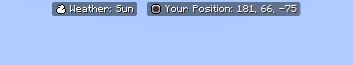
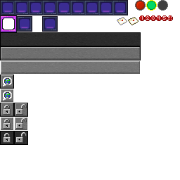

📖Overviewภาพรวม
KaizerMC HUD Converter is a visual drag-and-drop editor that generates
Minecraft Bedrock JSON UI code for custom HUD overlays. It outputs a ready-to-use
.mcpack resource pack + plugin config file inside an output.zip.
What you can do:
- Add background images, scoreboard texts, status bars, player heads, XP labels, and nameplates
- Position elements with anchors, offsets, and a 3×3 grid reference
- Set visibility conditions via PlaceholderAPI (PAPI)
- Upload bar textures and auto-slice them into 16 fill steps
- Preview your HUD in real-time at Bedrock screen resolution (480×270)
- Export everything as a single ZIP containing .mcpack + KaizerMultiBar config
KaizerMC HUD Converter คือตัวแก้ไข HUD แบบลากวาง (Drag & Drop)
ที่สร้างโค้ด JSON UI ของ Minecraft Bedrock สำหรับ HUD ที่กำหนดเอง ระบบจะสร้าง Resource Pack
.mcpack + ไฟล์ Config ของปลั๊กอินพร้อมใช้งานใน output.zip
สิ่งที่คุณทำได้:
- เพิ่มรูปภาพพื้นหลัง, ข้อความ Scoreboard, แถบสถานะ (Bar), หัวผู้เล่น, ป้ายเลเวล XP และ Nameplate
- จัดตำแหน่ง Element ด้วย Anchor, Offset และตาราง 3×3
- ตั้งเงื่อนไขการแสดงผลผ่าน PlaceholderAPI (PAPI)
- อัปโหลด Texture ของ Bar และตัดอัตโนมัติเป็น 16 ขั้นตอน
- ดูตัวอย่าง HUD แบบ Real-time ที่ความละเอียด Bedrock (480×270)
- Export ทุกอย่างเป็น ZIP เดียว บรรจุ .mcpack + KaizerMultiBar config
Important: Just like using design tools (e.g., Photoshop or Canva), you must manually drag, drop, and resize elements on the preview screen to build your HUD. The editor gives you complete freedom, so you have to arrange the layout exactly how you want it to appear in-game.
ข้อควรทราบ: การใช้งานเครื่องมือนี้จะเหมือนกับโปรแกรมออกแบบ (เช่น Photoshop หรือ Canva) คุณต้องคลิกลาก จัดวางตำแหน่ง และปรับขนาด Element ต่างๆ ด้วยตัวเองทั้งหมด บนหน้าจอ Preview เครื่องมือนี้ให้อิสระเต็มที่ คุณจึงต้องเป็นคนออกแบบและจัดหน้าตา HUD ให้ออกมาตามที่ต้องการ

The plugin takes advantage of the ability to create text-based images, including bossbar and actionbar displays. You can design basic HUDs directly with this plugin.
ปลั๊กอินนี้ใช้เทคนิคการสร้าง ข้อความรูปภาพ (Text-based images) โดยแสดงผลผ่านระบบ Bossbar และ Actionbar เป็นหลัก คุณสามารถใช้เครื่องมือนี้ช่วยออกแบบและโค้ด HUD พื้นฐานได้อย่างง่ายดาย
🖥️Interface Layoutโครงสร้างหน้าจอ
The editor has 3 main panels:
| Panel | Description |
|---|---|
| Left — Elements | Lists all elements you've added. Click to select, use ↑↓ buttons to reorder layers. Also contains Namespace input, Widgets upload, Save/Load buttons. |
| Center — Preview | Visual preview of the Bedrock HUD (480×270). Shows elements at their anchored positions. Add-element buttons and zoom controls are in the toolbar above. |
| Right — Properties | Shows editable properties for the selected element: name, position, anchor, offset, size, and type-specific settings. |
ตัวแก้ไขมี 3 แผงหลัก:
| แผง | รายละเอียด |
|---|---|
| ซ้าย — Elements | แสดงรายการ Element ทั้งหมดที่เพิ่มเข้ามา คลิกเพื่อเลือก ใช้ปุ่ม ↑↓ เลื่อนลำดับเลเยอร์ |
| กลาง — Preview | ดูตัวอย่าง HUD ของ Bedrock (480×270) แสดง Element ที่ตำแหน่ง Anchor |
| ขวา — Properties | แสดงคุณสมบัติที่แก้ไขได้ของ Element ที่เลือก |
📁Element GroupsElement Groups (ระบบจัดกลุ่ม)
Keep your HUD project organized by sorting elements into Groups. This feature is intended for editor organization and management only.
- Dropdown Menu: Located at the top of the Elements list. Click it to switch between different groups.
- Add Group (+): Click the plus button to create a new group.
- Delete Group (✕): Removes the current group. All elements inside will be moved back to the default "Main" group.
- Assigning Elements: To move an element into a group, select it and change the General -> Group property in the right panel.
จัดระเบียบโปรเจค HUD ของคุณให้เป็นหมวดหมู่ด้วย ระบบ Group (มีไว้เพื่อช่วยจัดระเบียบในหน้าต่างแก้ไขเท่านั้น ไม่มีผลต่อไฟล์ Export)
- กล่องเลือก Group: อยู่ด้านบนสุดของแผงรายชื่อ Elements ใช้สำหรับสลับดูชิ้นส่วนใน Group ต่างๆ
- ปุ่ม + (สร้างกลุ่ม): กดเพื่อตั้งชื่อและสร้าง Group ใหม่
- ปุ่ม ✕ (ลบกลุ่ม): ลบ Group ปัจจุบันทิ้ง (ชิ้นส่วนด้านในจะไม่หาย แต่จะย้ายกลับไปหน้ารวม "Main" อัตโนมัติ)
- วิธีย้ายชิ้นส่วน: คลิกเลือกชิ้นส่วนที่ต้องการ แล้วไปเปลี่ยนชื่อ Group ในแผงขวามือหัวข้อ General -> Group
🖼Image ElementImage Element (รูปภาพ)
Background images or decorative textures for your HUD. Click the "Image" button in the toolbar and select a PNG/JPEG/WebP file.
What does this do? This element is used to add static graphics to your screen. You can use it to create backgrounds for your UI, custom borders, crosshairs, decorative icons, or any picture that doesn't change based on game stats.
| Property | Description |
|---|---|
| Change Image | Replace the current texture with a new file |
| Texture Path | Path inside the resource pack (auto-filled as
textures/{namespace}/{filename})
|
รูปภาพพื้นหลังหรือ Texture ตกแต่งสำหรับ HUD คลิกปุ่ม "Image" ในแถบเครื่องมือแล้วเลือกไฟล์ PNG/JPEG/WebP
ฟีเจอร์นี้คืออะไร? ชิ้นส่วนนี้ใช้สำหรับเพิ่มกราฟิกภาพนิ่งลงบนหน้าจอ คุณสามารถใช้สร้างพื้นหลังเมนู กรอบ UI สวยๆ เป้าเล็ง (Crosshair) ไอคอนตกแต่ง หรือรูปภาพใดๆ ก็ตามที่ไม่ได้มีการเปลี่ยนแปลงค่าตามสถานะในเกม
| คุณสมบัติ | รายละเอียด |
|---|---|
| Change Image | เปลี่ยน Texture ปัจจุบันเป็นไฟล์ใหม่ |
| Texture Path | ที่อยู่ไฟล์ใน Resource Pack (ระบบใส่อัตโนมัติ) |
📝Scoreboard Text ElementScoreboard Text (ข้อความ)
Displays dynamic text from PlaceholderAPI. Click "Text" in the toolbar.
What does this do? This is your main tool for showing live server data to the player. Use it to display things like the player's name, their exact health numbers (e.g., "20/20"), amount of money, server ping, or current biome by typing in the corresponding PlaceholderAPI variables.
| Property | Description |
|---|---|
| Index | Collection index (0–15). Each text element needs a unique index. |
| PAPI | PlaceholderAPI placeholder, e.g. %player_health% |
| Pad Length | Text padding length (default 30). Controls display width. |
| Font Size | small / normal / large |
| Color (R, G, B) | Text color as float values 0.0–1.0 |
| Shadow | Enable text shadow for better readability |
| Text Anchor | Text alignment within its container (separate from position anchor) |
แสดงข้อความแบบ Dynamic จาก PlaceholderAPI คลิก "Text" ในแถบเครื่องมือ
ฟีเจอร์นี้คืออะไร? นี่คือเครื่องมือหลักสำหรับดึงข้อมูลแบบ Real-time จากเซิร์ฟเวอร์มาโชว์ให้ผู้เล่นเห็น ใช้แสดงชื่อผู้เล่น ตัวเลขเลือดที่แม่นยำ (เช่น "20/20") จำนวนเงิน ปิง (Ping) ของเซิร์ฟเวอร์ หรือชื่อไบโอม โดยการพิมพ์ตัวแปร PlaceholderAPI ลงไป
| คุณสมบัติ | รายละเอียด |
|---|---|
| Index | เลข Collection Index (0–15) แต่ละ Text ต้องมี Index ไม่ซ้ำกัน |
| PAPI | Placeholder ของ PlaceholderAPI เช่น %player_health% |
| Pad Length | ความยาว Padding (ค่าเริ่มต้น 30) |
| Font Size | small / normal / large |
| Color (R, G, B) | สีตัวอักษร ค่า float 0.0–1.0 |
| Shadow | เปิดเงาข้อความ |
| Text Anchor | การจัดตำแหน่งข้อความภายใน Container |
👤Player Head (Paperdoll)Player Head (หัวผู้เล่น)
Displays the player's 3D paper doll model. Click "Head" in the toolbar.
What does this do? This renders a live, animated 3D model of the player's skin directly on the HUD (often called a "Paperdoll"). It automatically updates to show the armor the player is wearing, items they are holding, and moves as the player animates.
| Property | Description |
|---|---|
| Doll Size (W, H) | Scale of the inner 3D model. Default: 75 × 205 |
| Doll Offset (X, Y) | Position offset of the 3D model within the container. Default: 1, 18 |
แสดงโมเดล 3D Paper Doll ของผู้เล่น คลิก "Head" ในแถบเครื่องมือ
ฟีเจอร์นี้คืออะไร? ฟีเจอร์นี้จะเรนเดอร์โมเดล 3D สกินของผู้เล่นแบบขยับได้ (มักเรียกว่า "Paperdoll") ขึ้นมาติดบนหน้าจอ HUD ทันที มันจะอัปเดตอัตโนมัติตามชุดเกราะที่ผู้เล่นใส่ ไอเทมที่ถืออยู่ และขยับท่าทางตามตัวละครจริง
| คุณสมบัติ | รายละเอียด |
|---|---|
| Doll Size (W, H) | ขนาด (Scale) ของโมเดล 3D ค่าเริ่มต้น: 75 × 205 |
| Doll Offset (X, Y) | ตำแหน่ง Offset ของโมเดล 3D ค่าเริ่มต้น: 1, 18 |
▬Status Bar ElementStatus Bar (แถบสถานะ)
Displays a fill-based status bar (HP, food, armor, air, XP). Click "Bar" and upload a texture PNG.
What does this do? This element takes a single image and automatically slices it into a progress bar that fills up or depletes based on player stats. It's perfect for creating custom visual Health bars, Mana bars, Stamina gauges, or custom class energy meters that react to PAPI values.
| Property | Description |
|---|---|
| Bar Type | HP, Food, Armor, Air, EXP, or Custom |
| Tag Prefix | Auto-filled 1–2 char tag. Editable only for Custom. |
| PAPI / Max | PlaceholderAPI value and maximum (Custom bars only) |
| Texture Path | Where sliced textures are stored in the pack |
| Deplete Direction | Left→Right, Right→Left, Center Out, Top→Bottom, Bottom→Top |
| Size (16) | Size at full fill (step 16/16) |
| Size (1) | Size at minimum fill (step 1/16) |
| Preview Slider | See examples of how Bar works (1–16). |
| Upload Texture | Auto-slices into 16 progressive fill images |
Bar Effects (HP & Food): HP: Freezing, Absorption, Health Boost, Regeneration, Wither, Poison | Food: Hunger, Saturation
แสดงแถบสถานะแบบเติม (HP, อาหาร, เกราะ, อากาศ, XP) คลิก "Bar" แล้วอัปโหลด Texture PNG
ฟีเจอร์นี้คืออะไร? เครื่องมือนี้จะนำรูปภาพยาวๆ 1 รูปไปคำนวณและตัดแบ่งเป็นหลอดสถานะที่จะเพิ่มหรือลดตามค่าของผู้เล่น มันตอบโจทย์มากสำหรับสร้าง หลอดเลือด (HP) หลอดมานา (Mana) หลอดความเหนื่อย (Stamina) หรือเกจพลังพิเศษต่างๆ ที่ผูกค่าความยาวไว้กับตัวแปร PAPI
| คุณสมบัติ | รายละเอียด |
|---|---|
| Bar Type | HP, Food, Armor, Air, EXP หรือ Custom |
| Tag Prefix | ตัวอักษร 1–2 ตัว แก้ไขได้เฉพาะ Custom |
| PAPI / Max | ค่า PlaceholderAPI และค่าสูงสุด (เฉพาะ Custom) |
| Deplete Dir. | ซ้าย→ขวา, ขวา→ซ้าย, กลางออก, บน→ล่าง, ล่าง→บน |
| Size (16/1) | ขนาดเมื่อเต็ม / ขนาดเมื่อน้อยสุด |
| Preview Slider | ดูตัวอย่าง การทำงานของ Bar (1–16) |
| Upload Texture | ตัดอัตโนมัติเป็น 16 รูปแบบเติมต่อเนื่อง |
Bar Effects: HP: Freezing, Absorption, Health Boost, Regeneration, Wither, Poison | Food: Hunger, Saturation
❇XP Level LabelXP Level Label (ป้ายเลเวล XP)
Displays the vanilla XP level number. Click "XP". Properties: Font Size (small/normal/large), Color (RGB float 0–1, default green 0.5,1.0,0.1), Shadow (default on).
What does this do? This creates a highly specialized number label that precisely mimics the look of the classic Minecraft XP level (with its signature green color and text shadow). You use this when you want to relocate the exact Vanilla XP number to a custom position.
แสดงตัวเลขเลเวล XP ของ Vanilla คลิก "XP" คุณสมบัติ: Font Size, Color (RGB float, เริ่มต้นสีเขียว), Shadow (เริ่มต้นเปิด)
ฟีเจอร์นี้คืออะไร? เครื่องมือนี้จะสร้างตัวเลขพิเศษที่จำลองรูปลักษณ์ของ เลเวล XP แบบดั้งเดิมของ Minecraft (ที่มีเอกลักษณ์เป็นสีเขียวและมีเงา) ขึ้นมา คุณจะใช้ชิ้นส่วนนี้ก็ต่อเมื่อต้องการย้ายค่าตัวเลขเลเวล Vanilla ไปไว้ในตำแหน่งอื่นที่คุณต้องการ
⬜Nameplate ElementNameplate (ป้ายชื่อ)
A text slot fixed to top-right, designed for right-side HUD info (party members, stats). Has same text properties as Text but position is locked to top_right.
What does this do? This element automatically draws a semi-transparent black background behind its text, and the background gracefully resizes depending on how long the text is. It is typically used for creating dynamic lists or floating labels, just like the default player name tag boxes.
ช่องข้อความตรึงไว้ที่มุม บนขวา สำหรับข้อมูล HUD ด้านขวา มีคุณสมบัติเหมือน Text แต่ตำแหน่ง ล็อคที่ top_right
ฟีเจอร์นี้คืออะไร? ชิ้นส่วนนี้จะสร้างกล่องพื้นหลังสีดำโปร่งแสงซ้อนอยู่หลังข้อความ และตัวกล่องจะยืดหดขยายขนาดได้เองตามความยาวของข้อความอัตโนมัติ นิยมใช้สำหรับสร้างรายชื่อผู้เล่นในปาร์ตี้ หรือกล่องข้อความลอยตัว คล้ายๆ กับป้ายชื่อตัวละครในเกม
⚙️General Propertiesคุณสมบัติทั่วไป
Every element has a Name field (display only). Actions: Duplicate (creates copy) and Delete (removes permanently).
ทุก Element มีช่อง Name (แสดงผลเท่านั้น) ปุ่ม: Duplicate (สร้างสำเนา) และ Delete (ลบถาวร)
📍Position Propertiesคุณสมบัติตำแหน่ง
| Property | Description |
|---|---|
| Anchor Grid | 3×3 grid to pick anchor point (top_left, center, bottom_right, etc.) |
| Offset (X, Y) | Pixel offset from anchor. Arrow keys = 0.1, Ctrl+Arrow = 1.0 |
| Linked Position | Inherit position from another element for stacking |
| Lock Position | Prevents movement via drag or arrow keys |
| คุณสมบัติ | รายละเอียด |
|---|---|
| Anchor Grid | ตาราง 3×3 เลือกจุดยึด (top_left, center, bottom_right ฯลฯ) |
| Offset (X, Y) | ระยะห่างจาก Anchor ลูกศร = 0.1, Ctrl+ลูกศร = 1.0 |
| Linked Position | สืบทอดตำแหน่งจาก Element อื่น |
| Lock Position | ป้องกันเลื่อนด้วยลากหรือลูกศร |
🎨Display Propertiesคุณสมบัติการแสดงผล
Layer: Rendering order (higher = on top). Alpha: Transparency 0.0–1.0.
Layer: ลำดับแสดงผล (สูง = อยู่บน) Alpha: ความโปร่งใส 0.0–1.0
👁️Visibility Conditionsเงื่อนไขการแสดงผล
Show/hide any element based on PlaceholderAPI. Works on all types.
| Property | Description |
|---|---|
| Enable Condition | Toggle visibility logic |
| PAPI Placeholder | e.g. %mmocore_party_count% |
| Operator | ==, !=, >, <, >=, <=, in (match any in list) |
| Compare Value | Value to compare against (use comma a,b,c for 'in' operator) |
| Invert Result | Hide when true instead of show |
Operator Breakdown:
| Operator | Meaning & Usage |
|---|---|
== |
Shows when values are exactly identical. e.g., PAPI=10, Value=10 ➡️ Show |
!= |
Shows when values are different. e.g., PAPI=5, Value=10 ➡️ Show |
> |
Shows when target PAPI is greater than Value. e.g., PAPI=15, Value=10 ➡️ Show |
< |
Shows when target PAPI is less than Value. e.g., PAPI=5, Value=10 ➡️ Show |
>= |
Shows when PAPI is greater than or equal to Value. e.g., PAPI=10, Value=10 ➡️ Show |
<= |
Shows when PAPI is less than or equal to Value. e.g., PAPI=10, Value=10 ➡️ Show |
🛠️ Example: Party HUD (MMOCore / MythicHUD)
Here is an example of setting up visibility conditions for a Party System (similar to MythicHUD). If you want an icon to appear only when Party Member 1 is an Archer:
Example 1: Show element only if Party Member 1 exists
- PAPI Placeholder:
%mmocore_party_count% - Operator:
>= - Compare Value:
1
Example 2: Show Class Icon (e.g., Archer)
- PAPI Placeholder:
%parseother_unsafe_{mmocore_party_member_1}_{mmocore_class}% - Operator:
== - Compare Value:
archer
MythicHUD Reference equivalent:
conditions:
- placeholder{ph=%parseother_unsafe_{mmocore_party_member_1}_{mmocore_class}%;v=archer} true texture ...แสดง/ซ่อน Element ตามค่า PlaceholderAPI ใช้ได้กับ ทุกประเภท
| คุณสมบัติ | รายละเอียด |
|---|---|
| Enable Condition | เปิด/ปิดระบบเงื่อนไข |
| PAPI Placeholder | เช่น %mmocore_party_count% |
| Operator | ==, !=, >, <, >=, <=, in (ตรงกับค่าใดค่าหนึ่งในลิสต์) |
| Compare Value | ค่าเปรียบเทียบ (ถ้าใช้ 'in' คั่นหลายค่าด้วยลูกน้ำ a,b,c) |
| Invert Result | ซ่อนเมื่อเงื่อนไขเป็นจริง |
คำอธิบาย Operator แต่ละตัว:
| Operator | ความหมายและการใช้งาน |
|---|---|
== |
แสดงผลเมื่อค่า ตรงกันเป๊ะ (เท่ากับ) เช่น PAPI=10, Value=10 ➡️ แสดง |
!= |
แสดงผลเมื่อค่า ไม่ตรงกัน (ไม่เท่ากับ) เช่น PAPI=5, Value=10 ➡️ แสดง |
> |
แสดงผลเมื่อค่า PAPI มากกว่า Value เช่น PAPI=15, Value=10 ➡️ แสดง |
< |
แสดงผลเมื่อค่า PAPI น้อยกว่า Value เช่น PAPI=5, Value=10 ➡️ แสดง |
>= |
แสดงผลเมื่อค่า PAPI มากกว่าหรือเท่ากับ Value เช่น PAPI=10, Value=10 ➡️ แสดง |
<= |
แสดงผลเมื่อค่า PAPI น้อยกว่าหรือเท่ากับ Value เช่น PAPI=10, Value=10 ➡️ แสดง |
in |
แสดงผลเมื่อค่า PAPI ตรงกับ ค่าใดค่าหนึ่งในหลายๆ ค่า ที่ใส่ใน Value
(คั่นด้วยลูกน้ำ) เช่น PAPI=apple, Value=apple,banana,orange ➡️ แสดง |
🛠️ ตัวอย่างการใช้งาน: Party HUD (MMOCore / MythicHUD)
ตัวอย่างการตั้งเงื่อนไขสำหรับระบบปาร์ตี้ (อ้างอิงจาก MythicHUD) หากเราต้องการให้แสดงไอคอนอาชีพ เฉพาะเมื่อสมาชิกปาร์ตี้คนที่ 1 เป็น Archer เท่านั้น ให้ตั้งค่าดังนี้:
ตัวอย่างที่ 1: เช็คว่ามีสมาชิกปาร์ตี้คนที่ 1 หรือไม่
- PAPI Placeholder:
%mmocore_party_count% - Operator:
>= - Compare Value:
1
ตัวอย่างที่ 2: แสดงไอคอนอาชีพ Archer ให้ตรงสาย
- PAPI Placeholder:
%parseother_unsafe_{mmocore_party_member_1}_{mmocore_class}% - Operator:
== - Compare Value:
archer
การเปรียบเทียบกับ Config ของ MythicHUD:
conditions:
- placeholder{ph=%parseother_unsafe_{mmocore_party_member_1}_{mmocore_class}%;v=archer} true texture ...ผลลัพธ์คือตัวแก้ไขของเราจะนำเงื่อนไขนี้ไปแปลงเป็น Bedrock UI ให้ซ่อน/แสดง อัตโนมัติเหมือนกับที่ MythicHUD ทำใน Java!
⊞Grid System & Anchor Positioningระบบตาราง (Grid) และ การตั้ง Anchor
In Minecraft Bedrock UI, the Anchor determines the reference point from which an element's position (offset) is calculated. If the anchor doesn't match the area where you place an element, it will shift to a wrong position on different screen sizes or devices.
Think of it this way: The anchor tells the game "measure my
position starting from this corner/edge of the screen." If your element is in the
top-left area but the anchor is set to bottom_right, the element will appear in
a completely different spot on phones, tablets, and PCs because the screen proportions are
different.
ใน Minecraft Bedrock UI, Anchor คือ จุดอ้างอิง ที่ใช้คำนวณตำแหน่ง (Offset) ของ Element ถ้า Anchor ไม่ตรงกับโซนที่คุณวาง Element ไว้ ตำแหน่งจะเพี้ยนเมื่อเปลี่ยนหน้าจอหรืออุปกรณ์
ลองนึกภาพแบบนี้: Anchor บอกเกมว่า
"วัดตำแหน่งของฉันจากมุมนี้/ขอบนี้ของหน้าจอ" ถ้า Element อยู่มุมซ้ายบนแต่ Anchor
ตั้งเป็น bottom_right — Element จะไปอยู่ผิดที่บนมือถือ, แท็บเล็ต และ PC
เพราะสัดส่วนหน้าจอต่างกัน
The editor divides the preview screen into a 3×3 grid (9 zones). Each zone maps to an anchor value. When you drag an element into a zone, the system automatically sets the correct anchor for that area.
top_left |
top_middle
|
top_right
|
left_middle
|
center |
right_middle
|
bottom_left
|
bottom_middle
|
bottom_right
|
Rule of thumb: The Anchor should match the closest corner or edge where your element is placed. For example:
- Health bar at top-left → Anchor =
top_left - Minimap at top-right → Anchor =
top_right - Hotbar at bottom-center → Anchor =
bottom_middle - Title text in the center → Anchor =
center
ตัวแก้ไขแบ่งหน้าจอ Preview ออกเป็น ตาราง 3×3 (9 โซน) แต่ละโซนจะตรงกับค่า Anchor ที่เหมาะสม เมื่อคุณ ลาก Element ไปวางในโซนใด ระบบจะตั้ง Anchor ที่ถูกต้องให้อัตโนมัติ
top_left |
top_middle
|
top_right
|
left_middle
|
center |
right_middle
|
bottom_left
|
bottom_middle
|
bottom_right
|
หลักการง่ายๆ: Anchor ควรตรงกับมุมหรือขอบที่ใกล้กับตำแหน่ง Element ที่สุด เช่น:
- แถบเลือด (HP) อยู่ซ้ายบน → Anchor =
top_left - มินิแมพอยู่ขวาบน → Anchor =
top_right - Hotbar อยู่กลางล่าง → Anchor =
bottom_middle - ข้อความตรงกลาง → Anchor =
center
You can also set anchor manually using the 3×3 Anchor Grid in the Properties panel (Position section). Click on any cell to set the anchor. This is useful when you need precise control or the auto-assignment from dragging isn't what you want.
anchor_from and
anchor_to are set to the same value by default. This is the recommended
approach for most HUD elements.
คุณสามารถตั้ง Anchor เองได้โดยใช้ ตาราง Anchor 3×3 ในแผง Properties (หัวข้อ Position) คลิกที่ช่องไหนก็ได้เพื่อตั้ง Anchor วิธีนี้เหมาะสำหรับกรณีที่ต้องการควบคุมแม่นยำ หรือเมื่อ Anchor อัตโนมัติจากการลากยังไม่ตรงที่ต้องการ
anchor_from และ
anchor_to จะถูกตั้งเป็นค่าเดียวกันโดยอัตโนมัติ ซึ่งเป็นวิธีที่แนะนำสำหรับ HUD
ส่วนใหญ่
📁NamespaceNamespace
Sets the folder name for textures in the resource pack. Default: custom_hud.
Images saved as textures/{namespace}/{filename}.
What does this do? This acts as a unique folder name specifically for your UI's images inside the resource pack. By changing it to something unique (like your server name), you ensure your HUD textures won't accidentally overwrite or completely break other resource packs the player might be using.
กำหนดชื่อโฟลเดอร์สำหรับ Texture ใน Resource Pack ค่าเริ่มต้น: custom_hud
ฟีเจอร์นี้คืออะไร? ค่านี้ทำหน้าที่เป็นชื่อโฟลเดอร์สำหรับเก็บรูปภาพ UI ของคุณใน Resource Pack การเปลี่ยนชื่อให้ไม่ซ้ำใคร (เช่น ตั้งเป็นชื่อเซิร์ฟเวอร์) จะช่วยป้องกันไม่ให้ Texture ของคุณไปทับหรือตีกับ Resource Pack อื่นๆ ที่ผู้เล่นกำลังใช้งานอยู่
🎮Widgets Upload (Hotbar)อัปโหลด Widgets (แถบ Hotbar)

Upload a custom texture to replace the hotbar slots and selection outline in the resource pack.
What does this do? This feature allows you to seamlessly convert a Java
Edition widgets.png hotbar texture into a Bedrock Edition compatible interface.
Bedrock uses a different UI system for the hotbar, but by uploading your Java
widgets.png here, the system automatically translates and maps your custom
hotbar design so it functions perfectly on Bedrock!
widgets.png. This feature is specifically for converting the hotbar texture.
อัปโหลด Texture ของคุณเองเพื่อแทนที่ช่อง Hotbar และกรอบเลือกไอเทมใน Resource Pack
ฟีเจอร์นี้คืออะไร? ฟีเจอร์นี้ช่วยให้คุณสามารถนำไฟล์แถบ Hotbar
widgets.png จากฝั่ง Java Edition มาแปลงให้รองรับกับ Bedrock Edition ได้ทันที!
ปกติแล้ว Bedrock จะใช้ระบบ UI ของ Hotbar ที่แตกต่างจาก Java แต่เพียงแค่อัปโหลด
widgets.png ของคุณเข้ามา ระบบจะทำการหั่นและเขียนโค้ดแปลงให้ Hotbar
ของคุณไปโชว์ใน Bedrock ได้อย่างถูกต้องและสวยงาม
widgets.png เท่านั้น! ฟีเจอร์นี้มีไว้สำหรับการ Convert แถบ
Hotbar โดยเฉพาะ
💾Save & Load Projectsบันทึกและโหลดโปรเจกต์
When logged in: Save — enter project name, saves to server. Load — browse saved projects to restore.
What does this do? This lets you safely back up your entire HUD design to the cloud (linked to your account). You can close the browser, switch computers, or take a break, and then load it right back up later with all your elements, positions, and images perfectly preserved.
เมื่อล็อกอิน: Save — ใส่ชื่อโปรเจกต์ บันทึกไปเซิร์ฟเวอร์ Load — เลือกโปรเจกต์ที่บันทึกไว้
ฟีเจอร์นี้คืออะไร? ระบบนี้อนุญาตให้คุณบันทึกผลงานการออกแบบ HUD ทั้งหมดเก็บไว้บน Cloud ส่วนตัว (ผ่านบัญชีของคุณ) คุณสามารถปิดเบราว์เซอร์ลุกไปทำอย่างอื่น หรือเปลี่ยนไปใช้คอมพิวเตอร์เครื่องอื่น แล้วค่อยกลับมาโหลดโปรเจกต์เพื่อทำต่อได้ โดยที่ตำแหน่ง รูปภาพ และการตั้งค่าทุกอย่างยังอยู่ครบ
📦Exportส่งออก (Export)
Click "Export .mcpack". The system validates → confirms → generates
output.zip containing:
What does this do? This is the final step! It takes your visual layout from the editor and physically writes all the necessary Bedrock UI JSON files, places your images in the correct folders, and writes the KaizerMultiBar setup config. It bundles everything into a single ready-to-use ZIP file that you can plug directly into your server.
GeyserMC/packs/{namespace}.mcpack— Bedrock resource packplugins/KaizerMultiBar/config.yml— Plugin configuration
คลิก "Export .mcpack" ระบบจะตรวจสอบ → ยืนยัน → สร้าง output.zip
ประกอบด้วย:
ฟีเจอร์นี้คืออะไร? นี่คือขั้นตอนสุดท้าย! ระบบจะนำสิ่งที่คุณจัดวางบนหน้าจอไปเขียนเป็นโค้ด Bedrock UI JSON เรียบเรียงโฟลเดอร์รูปภาพ และจัดทำไฟล์ Config สำหรับปลั๊กอิน KaizerMultiBar ให้อัตโนมัติ โดยแพ็คทั้งหมดให้กลายเป็นไฟล์ ZIP ไฟล์เดียวที่คุณสามารถนำไปลงในเซิร์ฟเวอร์และใช้งานได้ทันที
GeyserMC/packs/{namespace}.mcpack— Resource Packplugins/KaizerMultiBar/config.yml— Config ปลั๊กอิน
⌨️Keyboard Shortcutsปุ่มลัด
| Shortcut | Action |
|---|---|
| Arrow Keys | Move element by 0.1px |
| Ctrl+Arrow | Move element by 1.0px |
| Ctrl+Z | Undo |
| Ctrl+Y | Redo |
| Ctrl+C | Copy selected |
| Ctrl+V | Paste copied |
| Delete | Delete selected |
| Ctrl/Shift+Click | Multi-select |
| ปุ่มลัด | การทำงาน |
|---|---|
| ลูกศร | เลื่อน 0.1px |
| Ctrl+ลูกศร | เลื่อน 1.0px |
| Ctrl+Z | ย้อนกลับ |
| Ctrl+Y | ทำซ้ำ |
| Ctrl+C | คัดลอกที่เลือก |
| Ctrl+V | วางที่คัดลอก |
| Delete | ลบ Element |
| Ctrl/Shift+คลิก | เลือกหลายตัว |
🎬Video Tutorialsวิดีโอสอนใช้งาน
Step-by-step GIF demonstrations for each tool and feature.
สาธิตการใช้งานแบบ GIF ทีละขั้นตอนสำหรับแต่ละเครื่องมือ

Learn how to upload images, position them on the HUD, and adjust their size and texture paths.
สอนการอัปโหลดรูปภาพ จัดวางตำแหน่งบน HUD และปรับขนาดและเส้นทาง Texture

Create HP bars, mana bars, or any progress bar. Upload textures and configure fill directions.
สร้างแถบ HP, มานา หรือแถบความคืบหน้าใดๆ อัปโหลด Texture และตั้งค่าทิศทางการเติม

Add dynamic text with PlaceholderAPI. Set colors, shadows, font sizes, and text anchors.
เพิ่มข้อความแบบไดนามิกด้วย PlaceholderAPI ตั้งค่าสี เงา ขนาดตัวอักษร และการจัดตำแหน่งข้อความ

Add the player's 3D paperdoll head to your HUD. Adjust doll size and offset positioning.
เพิ่มหัวผู้เล่น 3D (Paperdoll) ลงบน HUD ปรับขนาดและตำแหน่ง Offset ของตุ๊กตา

Display the player's experience level with customizable colors and font sizes.
แสดงเลเวลประสบการณ์ของผู้เล่นพร้อมปรับแต่งสีและขนาดตัวอักษรได้ตามใจชอบ

Create floating nameplates above entities with custom PAPI placeholders and styling.
สร้างป้ายชื่อลอยเหนือ Entity ต่างๆ ด้วย PlaceholderAPI และการปรับแต่งสไตล์

See the complete workflow from start to finish: adding multiple elements, positioning, and preparing for export.
ดูเวิร์กโฟลว์แบบเต็มจากต้นจนจบ: เพิ่มหลาย Element จัดตำแหน่ง และเตรียม Export
💡Tips & Tricksเคล็ดลับ
- Zoom — +/− buttons (25–800%) for precise positioning
- Layer order — Later elements appear on top. Use ↑↓ to reorder
- Linked Position — Stack elements at same position by linking
- Bar textures — Upload full bar image, auto-sliced into 16 steps
- Multi-select — Ctrl/Shift+click, then move together with arrows
- Undo — Up to 100 steps stored. Ctrl+Z / Ctrl+Y freely
- Namespace — Use unique name to avoid texture conflicts
- ซูม — ปุ่ม +/− (25–800%) สำหรับจัดตำแหน่งแม่นยำ
- ลำดับ Layer — Element ทีหลังอยู่บน ใช้ ↑↓ เรียงลำดับ
- Linked Position — วางหลายตัวที่ตำแหน่งเดียวกันโดยเชื่อมโยง
- Bar Texture — อัปโหลดรูปเต็ม ตัดอัตโนมัติเป็น 16 ขั้น
- เลือกหลายตัว — Ctrl/Shift+คลิก แล้วเลื่อนพร้อมกันด้วยลูกศร
- Undo — เก็บได้ 100 ขั้น ใช้ Ctrl+Z / Ctrl+Y ได้ตามสบาย
- Namespace — ใช้ชื่อไม่ซ้ำป้องกัน Texture ชนกัน
❓Frequently Asked Questions (FAQ)คำถามที่พบบ่อย (FAQ)
Common questions and solutions for setting up KaizerMC HUD on your server.
คำถามและวิธีแก้ปัญหาที่พบบ่อยในการตั้งค่า KaizerMC HUD บนเซิร์ฟเวอร์ของคุณ
KaizerMultiBar is the bridge between the HUD you design in the web editor and the Bedrock client. Here's why it's essential:
- Renders your HUD in-game — The web editor creates the resource pack
(
.mcpack), but the plugin is what actually sends the BossBar data, scoreboard text, and placeholder values to the Bedrock client in real-time. - PlaceholderAPI integration — It resolves PAPI placeholders (e.g.
%player_health%,%vault_eco_balance%) and converts them into Bedrock-compatible display data. - Bedrock-only targeting — The plugin automatically detects Bedrock players via Floodgate and only sends HUD data to them, leaving Java players completely unaffected.
- Zero-config after export — The
output.zipcontains both the resource pack and the plugin config. Just extract and go.
KaizerMultiBar คือ ตัวเชื่อมระหว่าง HUD ที่คุณออกแบบในเว็บกับหน้าจอ Bedrock จริง เหตุผลที่ต้องใช้:
- แสดง HUD ในเกม — เว็บ Editor สร้าง Resource Pack (
.mcpack) แต่ปลั๊กอินคือตัวที่ส่งข้อมูล BossBar, ข้อความ Scoreboard และค่า Placeholder ไปยัง Bedrock Client แบบ Real-time - เชื่อมต่อ PlaceholderAPI — แปลง PAPI Placeholder (เช่น
%player_health%,%vault_eco_balance%) เป็นข้อมูลที่ Bedrock แสดงผลได้ - ทำงานกับ Bedrock เท่านั้น — ปลั๊กอินตรวจจับผู้เล่น Bedrock ผ่าน Floodgate อัตโนมัติ ไม่กระทบผู้เล่น Java เลย
- ไม่ต้องตั้งค่าเพิ่ม —
output.zipมีทั้ง Resource Pack และ Config ปลั๊กอิน แค่แตกไฟล์แล้วใช้ได้เลย
These plugins also use BossBar packets to display HUD elements. If they send BossBar data to Bedrock players, it will conflict with KaizerMultiBar and cause display issues. You must disable their Bedrock/Geyser output.
BetterHUD
Open config.yml and set:
MythicHUD
Open config.yml and set:
HappyHUD
HappyHUD does not have a built-in toggle for Bedrock players. You may need to use permission-based conditions to prevent it from showing to Bedrock players, or remove the plugin if you are using KaizerMultiBar for Bedrock HUD.
CustomNameplates
Open CustomNameplates/configs/bossbar.yml and add floodgate: false
inside the conditions block of each bossbar entry:
ปลั๊กอินเหล่านี้ใช้ BossBar Packet ในการแสดง HUD เช่นกัน ถ้าปลั๊กอินเหล่านี้ส่งข้อมูล BossBar ไปยังผู้เล่น Bedrock จะ ขัดแย้งกับ KaizerMultiBar และทำให้แสดงผลผิดพลาด คุณต้อง ปิดการแสดงผลฝั่ง Bedrock/Geyser ของปลั๊กอินเหล่านี้
BetterHUD
เปิดไฟล์ config.yml และตั้งค่า:
MythicHUD
เปิดไฟล์ config.yml และตั้งค่า:
HappyHUD
HappyHUD ไม่มีตัวเลือกปิดสำหรับ Bedrock โดยเฉพาะ อาจต้องใช้เงื่อนไข Permission เพื่อป้องกันไม่ให้แสดงกับผู้เล่น Bedrock หรือถอดปลั๊กอินออกหากใช้ KaizerMultiBar สำหรับ Bedrock HUD
CustomNameplates
เปิดไฟล์ CustomNameplates/configs/bossbar.yml และเพิ่ม
floodgate: false ในส่วน conditions ของแต่ละ bossbar:
The most common cause is that Floodgate is not installed or configured correctly. KaizerMultiBar uses Floodgate to detect Bedrock players. Without it, the plugin cannot identify who should see the HUD.
Step 1: Install Floodgate
Download Floodgate from the official page: https://geysermc.org/download?project=floodgate
Step 2: Configure GeyserMC
In your GeyserMC config.yml, make sure the auth type is set to floodgate:
Step 3: Proxy Setup (Velocity / BungeeCord)
If you are using a proxy (Velocity, BungeeCord, Waterfall), you need additional configuration:
- Install Floodgate on the proxy server
- In Floodgate's
config.ymlon the proxy, set:send-floodgate-data: true - Copy the
key.pemfile from the proxy's Floodgate folder to all backend servers' Floodgate folders - Restart all servers
Step 4: Verify
Join with a Bedrock client. If Floodgate is working correctly, the player's name will have a
prefix (default: .). If the HUD appears, you're all set!
สาเหตุที่พบบ่อยที่สุดคือ Floodgate ไม่ได้ติดตั้งหรือตั้งค่าไม่ถูกต้อง KaizerMultiBar ใช้ Floodgate ในการตรวจจับผู้เล่น Bedrock ถ้าไม่มี ปลั๊กอินจะไม่สามารถระบุได้ว่าใครควรเห็น HUD
ขั้นตอนที่ 1: ติดตั้ง Floodgate
ดาวน์โหลด Floodgate จากหน้าทางการ: https://geysermc.org/download?project=floodgate
ขั้นตอนที่ 2: ตั้งค่า GeyserMC
ใน config.yml ของ GeyserMC ต้องตั้ง auth-type เป็น floodgate:
ขั้นตอนที่ 3: สำหรับ Proxy (Velocity / BungeeCord)
ถ้าคุณใช้ Proxy (Velocity, BungeeCord, Waterfall) ต้องตั้งค่าเพิ่มเติม:
- ติดตั้ง Floodgate บน เซิร์ฟเวอร์ Proxy
- ใน
config.ymlของ Floodgate บน Proxy ตั้ง:send-floodgate-data: true - คัดลอกไฟล์
key.pemจากโฟลเดอร์ Floodgate ของ Proxy ไปวางในโฟลเดอร์ Floodgate ของทุก Backend Server - รีสตาร์ททุกเซิร์ฟเวอร์
ขั้นตอนที่ 4: ตรวจสอบ
เข้าเกมด้วย Bedrock Client ถ้า Floodgate ทำงานถูกต้อง ชื่อผู้เล่นจะมี Prefix นำหน้า
(ค่าเริ่มต้น: .) ถ้า HUD ขึ้นแล้วก็เรียบร้อย!
Position differences between the editor and in-game are usually caused by Anchor and Offset settings.
- Anchor determines the reference point on the screen (e.g., top_left, center, bottom_right). The same offset values will produce completely different positions depending on the anchor.
- Screen resolution — Bedrock uses 480×270 as the base UI resolution, but the actual display can vary slightly depending on device and GUI scale settings.
- GUI Scale — If the player changes their GUI Scale in Minecraft settings, elements may shift. Design your HUD assuming the default GUI scale.
- Safe Zone — Bedrock has a "Safe Zone" setting that can push UI elements inward. Ask players to set Safe Zone to the maximum (100%) in Settings → Video.
ตำแหน่งที่แตกต่างกันระหว่าง Editor กับในเกมมักเกิดจากการตั้งค่า Anchor และ Offset
- Anchor คือจุดอ้างอิงบนหน้าจอ (เช่น top_left, center, bottom_right) ค่า Offset เดียวกันจะให้ตำแหน่งต่างกันขึ้นอยู่กับ Anchor
- ความละเอียดหน้าจอ — Bedrock ใช้ 480×270 เป็นความละเอียด UI พื้นฐาน แต่การแสดงผลจริงอาจต่างกันเล็กน้อยตามอุปกรณ์และการตั้งค่า GUI Scale
- GUI Scale — ถ้าผู้เล่นเปลี่ยน GUI Scale ในตั้งค่า Minecraft Element อาจเลื่อนตำแหน่ง ควรออกแบบ HUD ที่ GUI Scale ค่าเริ่มต้น
- Safe Zone — Bedrock มีการตั้งค่า "Safe Zone" ที่อาจดัน UI เข้าด้านใน แนะนำให้ผู้เล่นตั้ง Safe Zone เป็นสูงสุด (100%) ใน Settings → Video
If the resource pack doesn't apply to Bedrock players, check the following:
- Pack location — The
.mcpackfile must be placed insideGeyserMC/packs/on the server where GeyserMC is installed (proxy or backend, depending on your setup). - File name — Make sure the file ends with
.mcpack(not.zip). - Restart required — GeyserMC loads resource packs on startup. You must restart the server (not just reload) after adding or updating the pack.
- Client cache — Sometimes Bedrock clients cache old packs. The player may need to go to Settings → Storage → Cached Data and clear it, or rejoin the server.
output.zip
already contains the correct folder structure:
GeyserMC/packs/your_namespace.mcpack. Simply extract the ZIP into your server
root.
ถ้า Resource Pack ไม่ถูกใช้งานบนผู้เล่น Bedrock ให้ตรวจสอบ:
- ตำแหน่งไฟล์ — ไฟล์
.mcpackต้องอยู่ในโฟลเดอร์GeyserMC/packs/บนเซิร์ฟเวอร์ที่ติดตั้ง GeyserMC (Proxy หรือ Backend ขึ้นอยู่กับระบบของคุณ) - ชื่อไฟล์ — ต้องลงท้ายด้วย
.mcpack(ไม่ใช่.zip) - ต้องรีสตาร์ท — GeyserMC โหลด Resource Pack ตอนเริ่มต้น ต้อง รีสตาร์ทเซิร์ฟเวอร์ (ไม่ใช่แค่ Reload) หลังจากเพิ่มหรืออัพเดท Pack
- Cache ของ Client — บางครั้ง Bedrock Client เก็บ Pack เก่าไว้ ผู้เล่นอาจต้องไปที่ Settings → Storage → Cached Data แล้วล้าง หรือเข้าเซิร์ฟใหม่
output.zip
มีโครงสร้างโฟลเดอร์ที่ถูกต้องอยู่แล้ว: GeyserMC/packs/your_namespace.mcpack
แค่แตกไฟล์ ZIP ลงใน Root ของเซิร์ฟเวอร์No. KaizerMultiBar is designed exclusively for Bedrock players. It automatically detects Bedrock players via the Floodgate API and only sends HUD data to them.
- Java players will not see any BossBar, actionbar, or overlay from this plugin
- The plugin does not interfere with other plugins' BossBar displays for Java players
- No resource packs are sent to Java clients
ไม่กระทบ KaizerMultiBar ออกแบบมาสำหรับผู้เล่น Bedrock โดยเฉพาะ ตรวจจับผู้เล่น Bedrock ผ่าน Floodgate API อัตโนมัติ และส่งข้อมูล HUD ให้เฉพาะผู้เล่น Bedrock
- ผู้เล่น Java จะ ไม่เห็น BossBar, Actionbar หรือ Overlay จากปลั๊กอินนี้
- ปลั๊กอิน ไม่รบกวน การแสดง BossBar ของปลั๊กอินอื่นสำหรับผู้เล่น Java
- ไม่มี Resource Pack ถูกส่งไปยัง Java Client
After editing your HUD in the web editor, follow these steps to apply changes on your server:
- Click Export in the web editor to download the new
output.zip - Extract the ZIP — it contains the updated
.mcpackand plugin config files - Replace the old
.mcpackfile inGeyserMC/packs/with the new one - Replace the plugin config files in
plugins/KaizerMultiBar/ - Restart the server (not just reload) — GeyserMC only loads packs on startup
- Ask players to clear their cached resource packs in Bedrock: Settings → Storage → Cached Data
/reload will not update the resource pack on Bedrock clients.
หลังจากแก้ไข HUD ในเว็บ Editor แล้ว ทำตามขั้นตอนนี้เพื่ออัพเดทบนเซิร์ฟเวอร์:
- กด Export ในเว็บ Editor เพื่อดาวน์โหลด
output.zipใหม่ - แตกไฟล์ ZIP — จะมี
.mcpackและไฟล์ Config ปลั๊กอินที่อัพเดทแล้ว - เอาไฟล์
.mcpackใหม่ไปแทนที่ไฟล์เก่าในโฟลเดอร์GeyserMC/packs/ - เอาไฟล์ Config ปลั๊กอินไปแทนที่ในโฟลเดอร์
plugins/KaizerMultiBar/ - รีสตาร์ทเซิร์ฟเวอร์ (ไม่ใช่แค่ reload) — GeyserMC โหลด Pack ตอนเริ่มต้นเท่านั้น
- แจ้งผู้เล่นให้ ล้าง Cache Resource Pack ใน Bedrock: Settings → Storage → Cached Data
/reload จะ ไม่ อัพเดท Resource Pack บน Bedrock Client
KaizerMultiBar works with any PlaceholderAPI placeholder. Here are the most commonly used expansions for HUD elements:
| Expansion | Example Placeholder | Use Case |
|---|---|---|
| Player | %player_health%, %player_food_level% |
Health bar, hunger bar |
| Vault | %vault_eco_balance% |
Money display |
| Statistic | %statistic_deaths%, %statistic_kill_entity% |
Kill/death counters |
| Server | %server_online%, %server_tps_1% |
Server info display |
| LuckPerms | %luckperms_prefix% |
Rank display |
| CheckItem | %checkitem_amount_mat:DIAMOND% |
Item counters |
How to install expansions:
/papi parse me %placeholder% to
test if a placeholder is working before adding it to your HUD.KaizerMultiBar ใช้งานร่วมกับ PlaceholderAPI placeholder ได้ทุกตัว นี่คือ Expansion ที่นิยมใช้สำหรับ HUD:
| Expansion | ตัวอย่าง Placeholder | ใช้ทำอะไร |
|---|---|---|
| Player | %player_health%, %player_food_level% |
แถบเลือด, แถบหิว |
| Vault | %vault_eco_balance% |
แสดงเงิน |
| Statistic | %statistic_deaths%, %statistic_kill_entity% |
นับ Kill/Death |
| Server | %server_online%, %server_tps_1% |
แสดงข้อมูลเซิร์ฟ |
| LuckPerms | %luckperms_prefix% |
แสดงยศ |
| CheckItem | %checkitem_amount_mat:DIAMOND% |
นับไอเทม |
วิธีติดตั้ง Expansion:
/papi parse me %placeholder%
เพื่อทดสอบว่า Placeholder ทำงานได้หรือไม่ ก่อนใส่ลงใน HUDServer Software:
| Software | Supported | Notes |
|---|---|---|
| Paper | ✅ Recommended | Best compatibility and performance |
| Spigot | ✅ Yes | Fully supported |
| Purpur | ✅ Yes | Paper fork — works out of the box |
| Folia | ✅ Yes | Region-threaded — supported with async scheduling |
| Fabric / Forge | ❌ No | Not a Bukkit-based server |
Minecraft Version: 1.16.5 – 1.21.x (latest)
Required Dependencies:
| Plugin | Required? | Purpose |
|---|---|---|
| GeyserMC | ✅ Required | Allows Bedrock players to join Java servers |
| Floodgate | ✅ Required | Detects Bedrock players for HUD targeting |
| ProtocolLib | ✅ Required | Handles BossBar packet management |
| PlaceholderAPI | ✅ Required | Resolves dynamic placeholders for HUD text |
Server Software:
| Software | รองรับ | หมายเหตุ |
|---|---|---|
| Paper | ✅ แนะนำ | เข้ากันได้ดีที่สุด ประสิทธิภาพสูง |
| Spigot | ✅ ได้ | รองรับเต็มที่ |
| Purpur | ✅ ได้ | Fork ของ Paper — ใช้ได้เลย |
| Folia | ✅ ได้ | Region-threaded — รองรับด้วย async scheduling |
| Fabric / Forge | ❌ ไม่ได้ | ไม่ใช่ Bukkit-based server |
เวอร์ชัน Minecraft: 1.16.5 – 1.21.x (ล่าสุด)
ปลั๊กอินที่ต้องติดตั้ง (Dependencies):
| ปลั๊กอิน | จำเป็น? | หน้าที่ |
|---|---|---|
| GeyserMC | ✅ จำเป็น | ให้ผู้เล่น Bedrock เข้าเซิร์ฟ Java ได้ |
| Floodgate | ✅ จำเป็น | ตรวจจับผู้เล่น Bedrock สำหรับแสดง HUD |
| ProtocolLib | ✅ จำเป็น | จัดการ BossBar Packet |
| PlaceholderAPI | ✅ จำเป็น | แปลง Placeholder เป็นข้อมูลจริงสำหรับ HUD |
Yes — 100% free and open source under the GNU General Public License v3.0 (GPL-3.0).
Every feature in KaizerHUD Studio and its companion server plugins
(KaizerMultiBar, KaizerMultiBarGeyser, and KaizerUI) is
unlocked for everyone — including Live Code View & Editing, clean Readable .mcpack
Export, Live Folder Sync, GUI Studio, and Java HUD Import/Export. No license keys, accounts, or
subscriptions are required.
ใช่ — ใช้งานฟรี 100% และเปิดเป็น Open Source ภายใต้สัญญาอนุญาต GNU General Public License v3.0 (GPL-3.0)
ทุกฟีเจอร์ใน KaizerHUD Studio รวมถึงปลั๊กอินฝั่งเซิร์ฟเวอร์
(KaizerMultiBar, KaizerMultiBarGeyser และ KaizerUI)
เปิดให้ใช้งานได้ครบทั้งหมด ไม่ว่าจะเป็น Live Code View & Editing, การ Export ไฟล์
.mcpack แบบ Readable, Live Folder Sync, GUI Studio และ Java HUD Import/Export
โดยไม่ต้องใช้ License Key บัญชี หรือแพลนรายเดือนใดๆ
Widgets Upload is a feature for uploading a custom widgets.png
file — the texture that contains your hotbar slots and selection highlight.
This is NOT for adding regular images to your HUD.
What does it do?
When you upload a widgets.png file (182×22 pixels), the editor automatically slices it into individual hotbar slot textures and includes them in the exported .mcpack. This allows you to customize the appearance of the hotbar (the item slots at the bottom of the screen).
Example widgets.png:
How to use it:
- Find or create a
widgets.pngfile (182×22 pixels) with your custom hotbar design - In the editor, click "Upload Widgets" in the left panel
- Select your
widgets.pngfile - The preview will show your uploaded texture
- Export your HUD — the custom hotbar will be included automatically
Widgets Upload คือฟีเจอร์สำหรับอัปโหลดไฟล์ widgets.png
ที่กำหนดเอง — เทกซ์เจอร์ที่มีช่องไอเทม Hotbar และกรอบเลือก
นี่ไม่ใช่สำหรับเพิ่มรูปภาพทั่วไปลงใน HUD
มันทำอะไร?
เมื่อคุณอัปโหลดไฟล์ widgets.png (ขนาด 182×22 พิกเซล) Editor จะตัดมันเป็นเทกซ์เจอร์ช่อง Hotbar แยกชิ้นอัตโนมัติ และรวมเข้าไปใน .mcpack ที่ Export ออกมา ทำให้คุณสามารถปรับแต่งรูปลักษณ์ของ Hotbar (แถบไอเทมด้านล่างหน้าจอ) ได้
ตัวอย่าง widgets.png:
วิธีใช้:
- หาหรือสร้างไฟล์
widgets.png(ขนาด 182×22 พิกเซล) ที่มีดีไซน์ Hotbar ที่คุณต้องการ - ใน Editor กด "Upload Widgets" ในแผงด้านซ้าย
- เลือกไฟล์
widgets.pngของคุณ - ตัวอย่างจะแสดงเทกซ์เจอร์ที่อัปโหลด
- Export HUD — Hotbar ที่กำหนดเองจะถูกรวมเข้าไปอัตโนมัติ